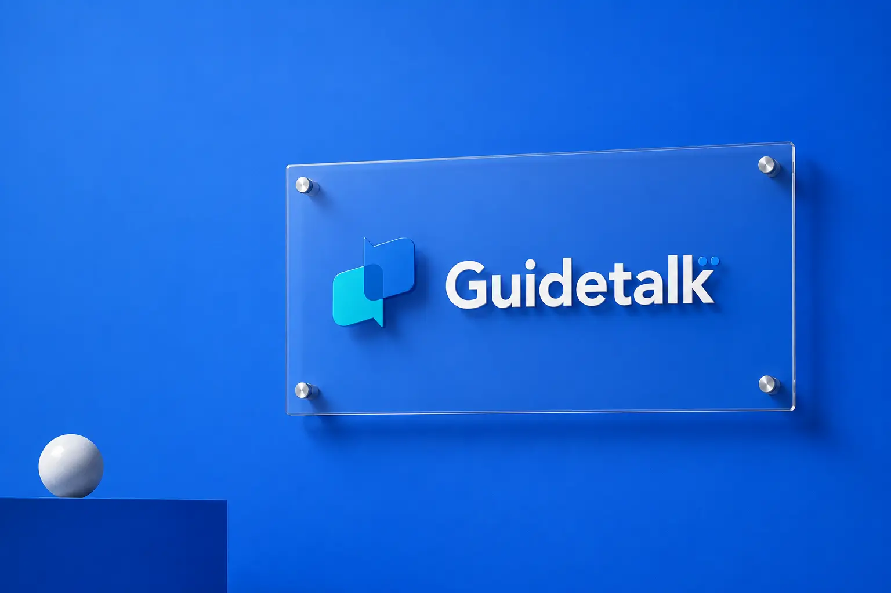
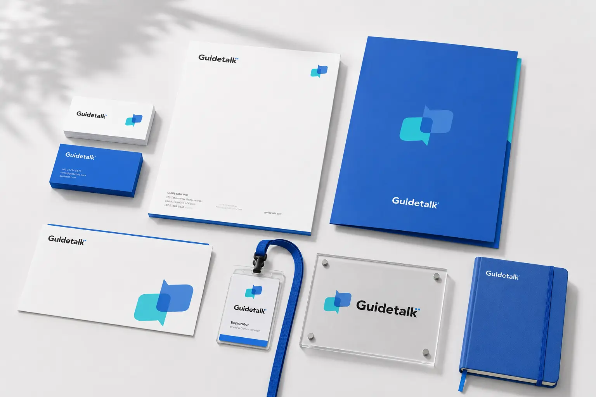
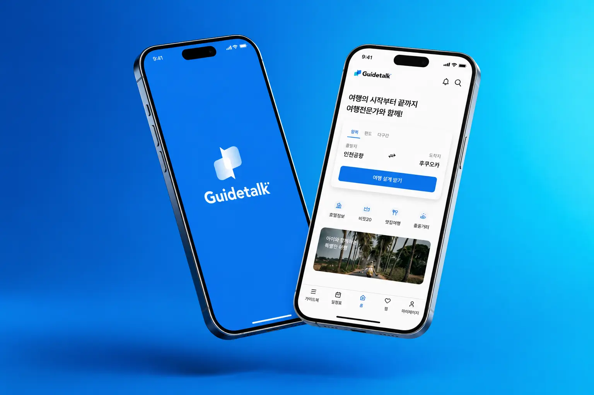
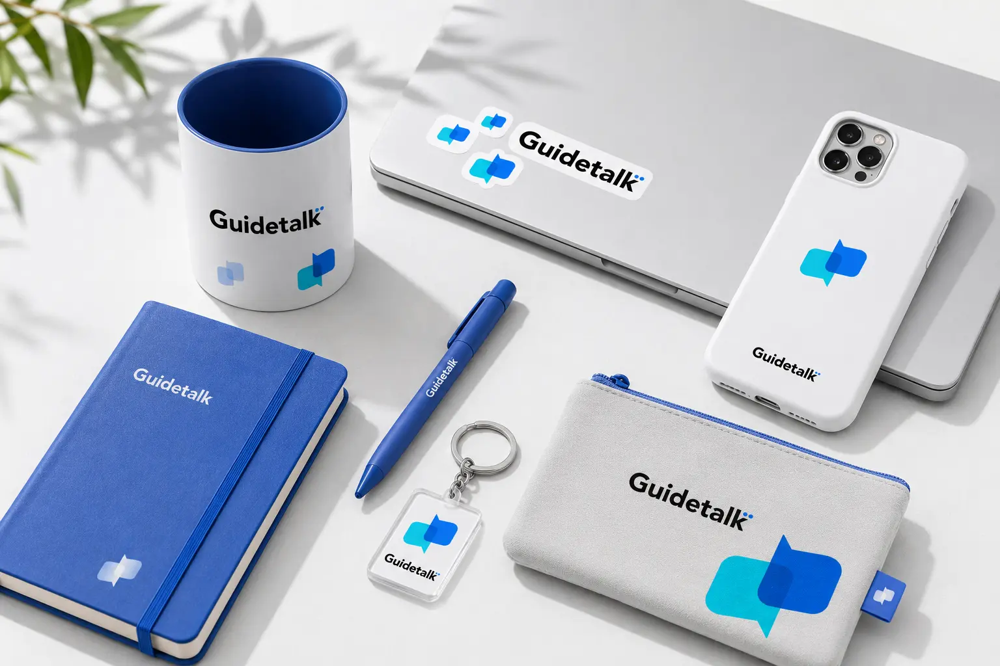
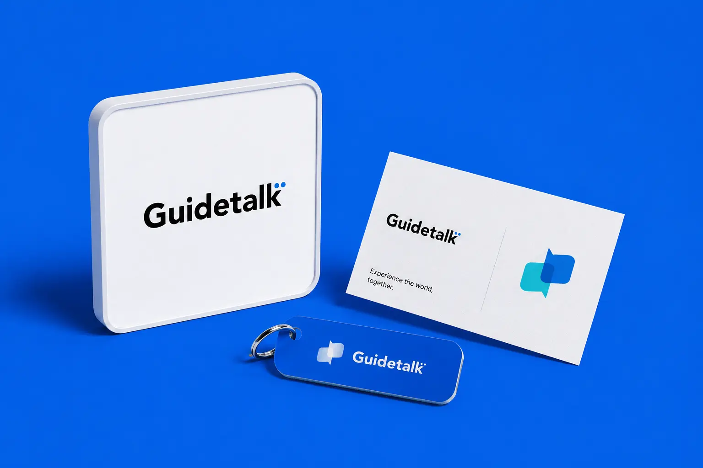
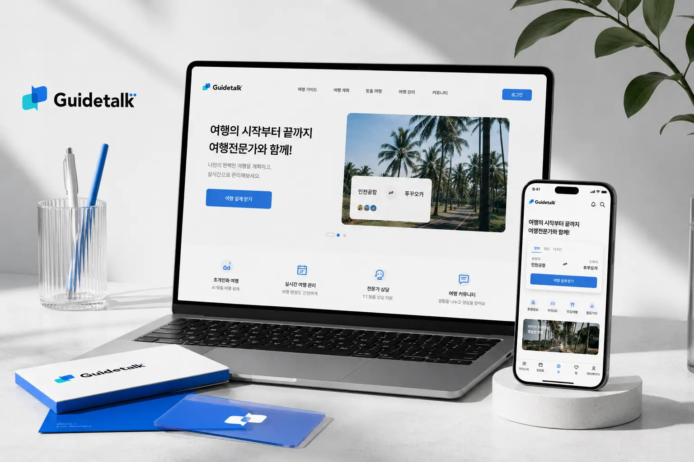
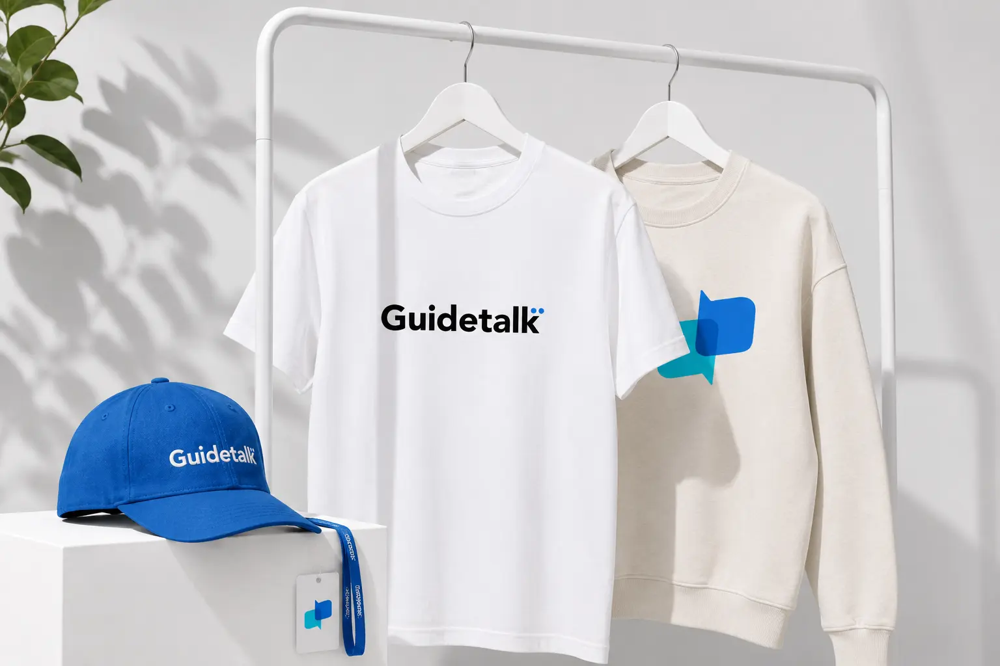

Guidetalk의 목표는 사용자가 여행 준비 과정에서 느끼는 정보 탐색의 피로와 일정 구성의 어려움을 줄이는 것이다. 단순히 여행 상품을 보여주는 플랫폼이 아니라, 출발지와 도착지, 기간, 인원 등 기본 정보를 바탕으로 전문가가 여행을 설계해주는 서비스 경험을 제안한다. 브랜드는 신뢰감, 편리함, 전문성, 실시간 소통의 이미지를 중심으로 사용자에게 안정적인 첫인상을 전달해야 한다. 웹사이트와 앱 화면 모두 직관적인 검색 구조와 명확한 버튼 시스템을 적용해 이용 흐름을 단순화했다. 최종적으로 Guidetalk는 여행 초보자부터 맞춤 여행을 원하는 사용자까지 편하게 접근할 수 있는 전문 여행 가이드 플랫폼으로 자리 잡는 것을 목표로 한다.
Portfolio / Brand Identity
GUIDETALK
Guidetalk는 여행의 시작부터 끝까지 전문 가이드와 함께할 수 있도록 돕는 여행 설계 플랫폼 브랜드이다. 브랜드명은 ‘Guide’와 ‘Talk’의 결합으로, 여행 전문가와 사용자가 대화하듯 편하게 연결되는 서비스를 직관적으로 보여준다. 로고와 심볼은 말풍선을 기반으로 구성되어 있으며, 여행 상담과 일정 설계, 정보 탐색, 맞춤형 추천이라는 서비스 성격을 명확하게 전달한다. 전체적인 브랜드 이미지는 신뢰감 있는 블루 컬러를 중심으로 밝고 전문적인 디지털 서비스의 분위기를 갖고 있다. Guidetalk는 복잡한 여행 준비 과정을 전문가와의 소통을 통해 쉽고 안정적으로 해결해주는 여행 지원 브랜드로 해석된다.
- Scope
- UX/UI / Travel Tech
- Studio
- BDLab
- Year
- 2026

Guidetalk의 핵심 메시지는 “여행의 시작부터 끝까지 여행전문가와 함께”이다. 이 문장은 브랜드가 단순 예약 서비스가 아니라 여행 전 과정에 동행하는 안내자 역할을 한다는 점을 직접적으로 보여준다. 사용자는 Guidetalk를 통해 목적지 선택, 일정 구성, 여행 정보 확인, 맞춤 추천까지 하나의 흐름 안에서 경험할 수 있다. 브랜드는 여행을 혼자 준비하는 부담을 줄이고, 전문가와의 연결을 통해 더 정확하고 편안한 여행 경험을 제공한다. Guidetalk는 여행 정보를 전달하는 데 그치지 않고, 사용자의 여행 결정을 도와주는 대화형 여행 파트너의 이미지를 전달한다.
Guidetalk의 디자인은 블루 계열 컬러와 화이트 기반 레이아웃을 중심으로 구성되어 있다. 메인 컬러인 선명한 블루는 신뢰감과 전문성을 강조하고, 서브 컬러인 밝은 블루와 민트 컬러는 여행 서비스가 가진 경쾌함과 접근성을 보완한다. 웹사이트 메인 화면은 오로라와 밤하늘 이미지를 활용해 여행의 기대감과 목적지에 대한 감성적 몰입을 만든다. 반면 UI 영역은 흰색 카드 형태로 정리되어 사용자가 필요한 정보를 빠르게 인식할 수 있도록 구성되어 있다. 전체 디자인은 감성적인 여행 이미지와 기능적인 예약 인터페이스를 결합해, 브랜드의 전문성과 편리함을 동시에 보여준다.





